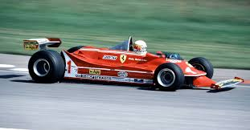

1980

Le più importanti scuderie che hanno partecipato al Campionato Mondiale di Formula 1 nel 1980 erano:
- McLaren
- Ferrari
- Williams
- Brabham
Il Campionato Mondiale di Formula 1 del 1980 è stato vinto dalla scuderia Williams dal pilota Alan Jones
HOME
Tutti i diritti sono riservati
Sito realizzato da Boniotti Elisa, Lucchini Davide, Tassone Thomas